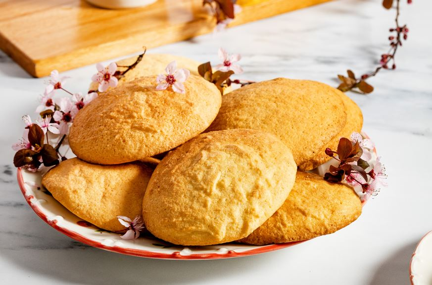

Put the eggs in a deep bowl and beat them. Then we add the minced garlic, parsley, dill, green onion. We stir them again.
Add the grated cheese while mixing, add the flour and finally the grated pumpkin.After the mass has taken shape, add the spices and salt
Put some olive oil or sunflower oil in a pan and after it is well heated, pour about 1 tablespoon of the meatball mixture. Turn them over to the other side when the underside is golden.
Advice:
For those of you who don't like too much oil, you can put very little in a non-stick pan and the taste and shape remain the same.
Keep in mind that after you grate the pumpkins, remove the juice by squeezing them through a cheesecloth, then add them to the mixture.
"Tave Dheu"
Ingredients
30 g of red pepper (chili)
30 g of green pepper
70 g of beef
30 g of cottage cheese
50 g of tomato sauce
10 grams of flour
3 grams of parsley
20 gr butter
30 grams of onion
1 garlic cloves, finely chopped
sea salt and freshly ground black pepper
Recipe
To prepare the dish, first cut the meat into small cubes. Then grate the onion and green pepper.
Put some olive oil in a pot and add the onion, meat and pepper. We also add the flour and saute until it gets a reddish color.
Then we add the tomato sauce, the red chili pepper, which we previously grated, and after sauteing the ingredients, add some water and curd and let them boil for 2-3 min. After boiling, remove the pot and leave it aside.
We take the clay pan, grease it with butter and put it on the stove, so that it gets as hot as possible.
When the pan is boiled, pour the prepared mixture and put it in the oven for 5 minutes at a temperature of 200 degrees.
"Ballokume"

Ingredients
250 grams of butter
300 g Sugar
4 eggs
500 g of corn flour
Recipe
First melt the butter and remove the white membrane after melting, using a spoon.
In a deep bowl, add the melted butter with the sugar. Beat them with a food processor for about 20 minutes until the mixture turns creamy and white. (You can also use an electric hand beater, it works the same).
Add the eggs one by one (mix add, mix add) until a homogeneous golden creamy mass is formed.
After you have formed the cream, add the flour slowly, stirring it with a wooden spoon or spatula. Stir from top-bottom-top, until you form ballokum dough.
After forming the dough, turn on the oven at 180 degrees C to heat it up.
Line a large pan with baking paper and take a handful of dough and place it on the pan. Give them a round shape but without pressing the shapes and place them far from each other as they expand when baked.
Put them to bake in the oven for about 25-30 minutes
Advice:
The dough for this recipe can be used for 2 pans with about 12 balls.